CASE STUDY 02
郵票收發統計自動化
將原本分散於不同 Excel 表格與 Word 文件中的郵寄資料， 重新集中為單一資料來源， 再依用途自動產生整月郵票收支、掛號二聯單與郵票盤存資料。
01
SINGLE DATA SOURCE
先把重複輸入，集中成一份資料
原有作業中的郵票收支明細、 掛號二聯單與郵票盤存， 分散在不同的 Excel 表格與 Word 文件中。 同一筆郵寄資料往往需要依不同用途再次輸入或整理， 帳面金額與實際郵票數量也需要人工計算。
因此我先建立「所有郵票明細」， 將日常郵寄資料集中成單一來源。 使用者平常主要維護這一張表， 後續需要的正式資料再由程式依這份資料產生。
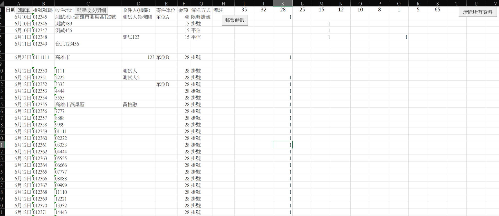
每筆資料除了日期、掛號號碼、收件資料、 寄件單位、金額與傳送方式之外， 也會記錄這次寄件實際使用的各面額郵票張數， 讓後續正式文件與郵票盤存都能從同一份資料取得。
02
POSTAGE RECORD
原本人工維護的整月明細，改由來源資料產生
郵票收支明細原本需要人工逐筆輸入， 整月資料持續往下累積， 並另外整理小計、上月結存、本月新增、 本月支出與月底結存。
調整後仍保留原本需要使用的正式表格格式， 但不需要再重新輸入相同的郵寄資料。 按下更新按鈕後， 程式會掃描整個月的「所有郵票明細」， 再產生對應的整月郵票收支資料。
郵票收支明細
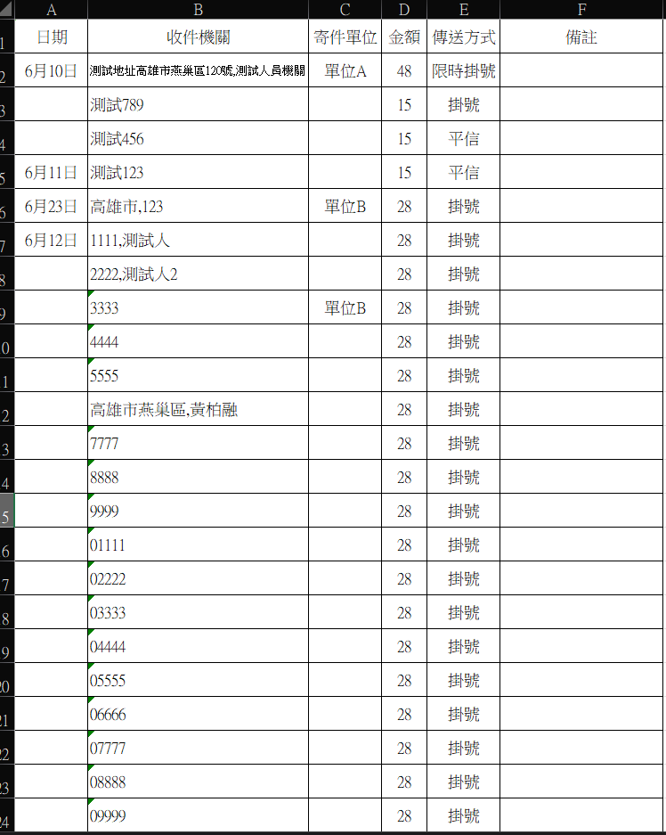
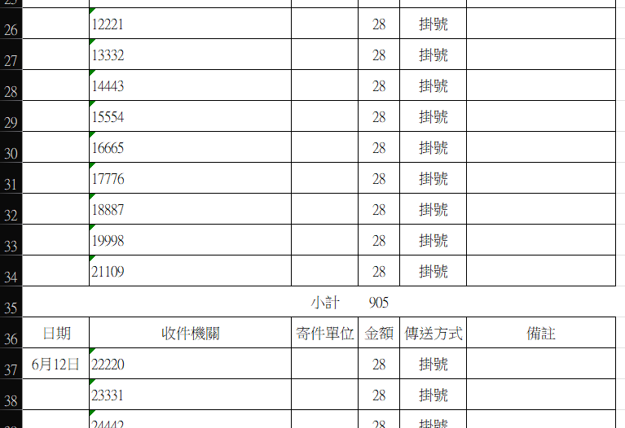
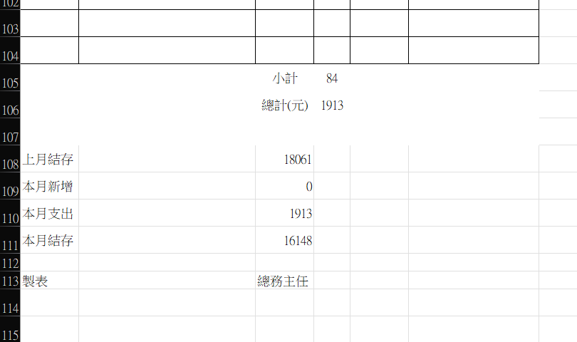
匯出時同步檢查資料
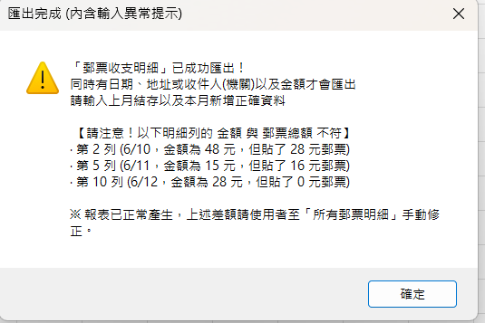
匯出郵票收支明細時，系統不會單純把所有列直接帶出。 只有同時具備日期、地址或收件人（機關），以及金額的資料， 才會列入匯出。 如果金額與郵票總額不一致， 系統也會在匯出完成時列出異常資料， 提醒使用者回到來源表修正。
BEFORE → AFTER
表格沒有消失，改變的是資料怎麼進去
正式作業仍需要這份郵票收支明細， 因此並不是另外做一張完全不同的報表。 真正改變的是資料來源： 從原本人工逐筆維護， 改成由「所有郵票明細」統一提供資料， 再一次產生整月內容。
03
REGISTERED MAIL FORM
同一份來源資料，再產生掛號二聯單
掛號二聯單原本使用 Word 維護。 掛號號碼通常是連續編號， 但在 Word 表格中連續輸入與換格較不方便； 而同一筆寄件資料之後還需要再輸入到郵票收支明細， 因此會產生重複輸入。
因此將二聯單一起整合到 Excel 流程中。 使用者只需維護「所有郵票明細」， 按下按鈕後，程式會掃描整個月的資料， 篩選掛號類型的紀錄， 並依日期自動分成不同的二聯單區塊； 同一天資料較多時也會自動續頁， 再依原本使用的格式產生整月內容。
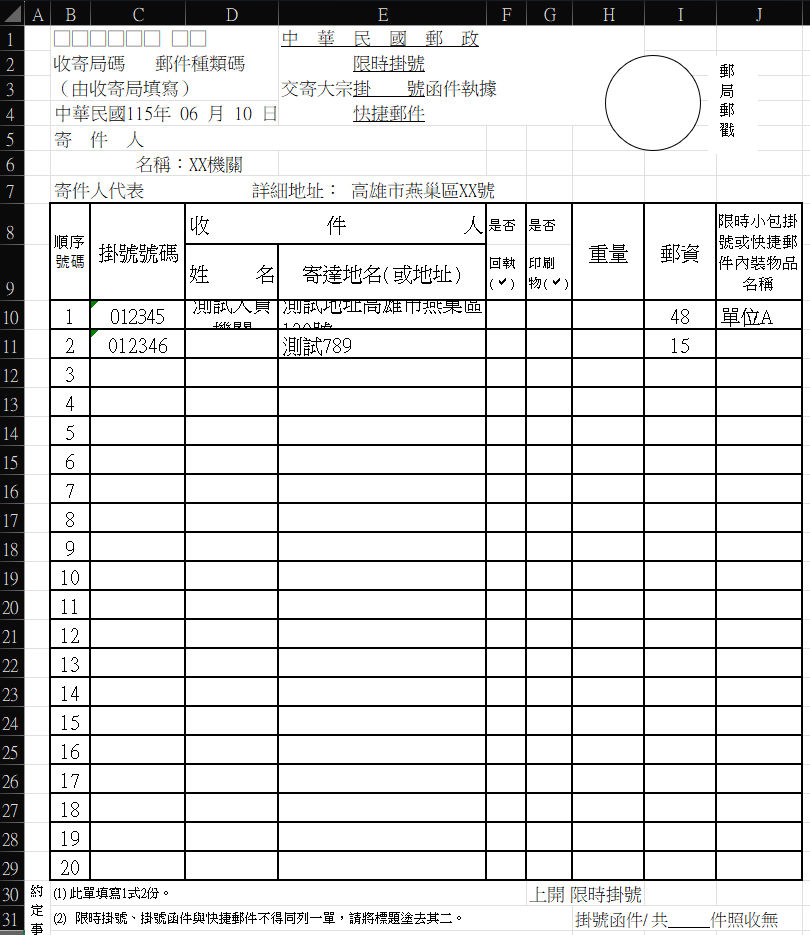
平信等不需要掛號執據的寄件資料不會進入二聯單； 系統只取符合掛號類型的紀錄， 因此不需要使用者另外挑選或重新輸入。
04
POSTAGE INVENTORY
每一筆使用量，最後都會回到郵票庫存
「所有郵票明細」後方會記錄每筆寄件實際使用的 各面額郵票張數。 系統依上期剩餘數量、本月新購郵票與實際使用紀錄， 計算各面額目前剩餘的張數與金額。
若當月另外購買新郵票， 新增數量仍由使用者依實際狀況輸入， 再由系統納入後續盤存計算。
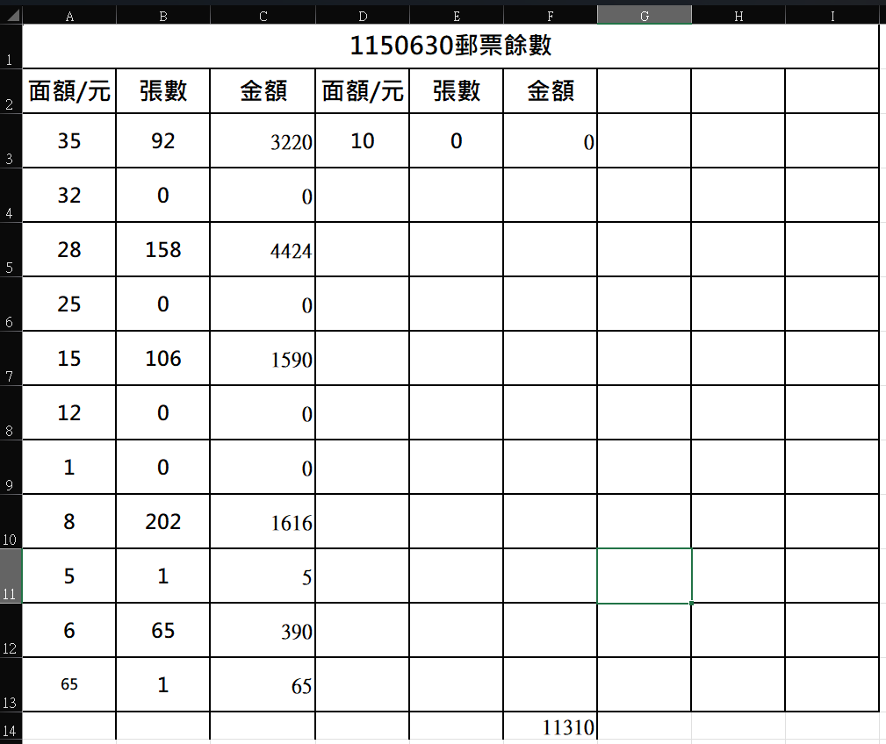
INVENTORY CHECK
盤存時，同步檢查郵票是否足夠
產生郵票餘數時， 系統會同步檢查每筆寄件使用的郵票數量。 若所有資料都能正常扣除， 會顯示結算成功。
若某個面額的郵票不足， 則會直接指出異常資料所在列、 郵票面額、扣除前剩餘數量， 以及該筆資料預計扣除的張數， 方便使用者回到來源資料確認。
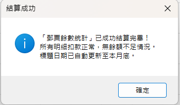
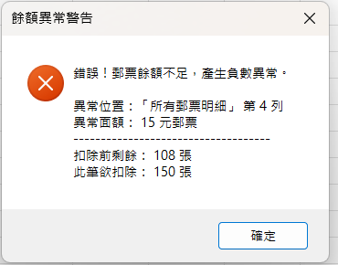
DESIGN DECISION
為什麼建議每天更新一次郵票餘數？
每次更新郵票餘數時， 系統都會依目前已登錄的整月資料， 重新計算各面額截至當下的剩餘數量。
因此建議每天新增完郵寄資料後更新一次， 再將系統計算出的帳面餘數與實際持有的郵票進行核對。 若當天有新購郵票，也可以在當天盤點時一併更新新增的面額與張數， 讓帳面資料與實際持有數量保持一致。 如果當天就發現數量不一致， 也能較快回頭確認近期輸入的資料， 避免累積多天後才發現問題。
同一套餘數統計，同時支援日常核對與月底盤存： 平時更新時，可作為截至當天的郵票帳面餘數； 到月底完成最後一次更新後， 同一份結果即可作為當月月底盤存資料。
05
SAFETY CHECK
清除資料前，先確認真的要刪
每個新月份可以複製新檔案繼續使用。 為了方便清除歷史明細， 來源表提供「清除所有資料」功能， 但不會在按下按鈕後直接刪除。
雖然建議以空白檔案作為新月份的基準， 實際使用時仍可能直接複製上個月的檔案。 若只靠人工刪除，較下方的舊資料可能因未被注意而殘留， 後續更新時就可能被誤認為本月資料。 因此清除功能會一次移除來源表中的既有明細， 降低跨月資料殘留的風險。
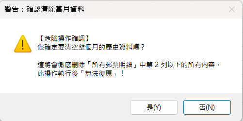
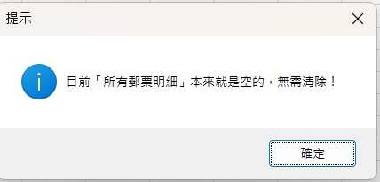
依目前狀態執行： 有資料時先要求使用者再次確認； 沒有資料時則直接提示無需執行， 避免不必要的刪除操作。
06
WORKFLOW
日常只維護一份明細，再用按鈕完成後續工作
這次調整的重點不是重新設計所有正式表格， 而是保留原本需要的輸出格式， 把重複輸入與人工統整移到程式處理。
集中輸入至
所有郵票明細
程式掃描
整月來源資料
收支、二聯單
與郵票盤存
07
RESULT
從多處人工維護，改成集中輸入與整月輸出
單一來源
日常郵寄資料集中維護在 「所有郵票明細」， 不需同步輸入多張正式表格。
整月一次產生
郵票收支明細與掛號二聯單 都能一次掃描整月資料， 不需要逐日建立。
面額與餘數連動
各筆實際使用的郵票面額 直接納入盤存， 讓剩餘張數與金額可以持續更新。
DEVELOPMENT
開發方式
依實際作業方式整理資料欄位、 輸出規則與操作流程， 並針對使用者較不熟悉 Excel 的情況， 將主要操作改為按鈕執行。
專案中的需求理解、流程設計、 功能測試與實際使用調整由我負責； VBA 程式撰寫、技術查詢與除錯過程會搭配 AI 協助。